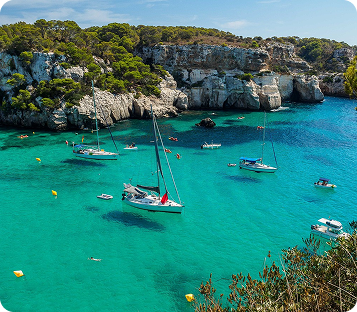
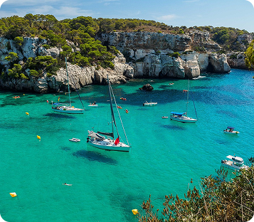

Cala Macarelleta
La Cala Macarelleta és una petita cala situada a la costa sud de Menorca. És coneguda per les seves aigües cristal·lines i la seva sorra blanca, envoltada de vegetació mediterrània. Aquesta cala és ideal per a aquells que busquen tranquil·litat i bellesa natural.
Detalls de la Cala Macarelleta
Aquesta cala destaca per la seva bellesa natural i el seu entorn pràcticament verge. S'hi accedeix caminant des de la veïna Cala Macarella, a través d'un camí curt però una mica costerut que ofereix vistes espectaculars de la costa.

 

És una cala molt popular durant els mesos d'estiu, especialment entre els qui busquen un ambient tranquil i paisatges fotogènics. Tot i el seu accés limitat, l'esforç val la pena per poder banyar-se en una de les aigües més transparents de Menorca.
Si vols visitar-la, és recomanable arribar-hi d'hora al matí i portar aigua i protecció solar, ja que no hi ha serveis a la platja. Cala Macarelleta és, sens dubte, un dels indrets més màgics de l'illa.